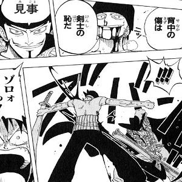
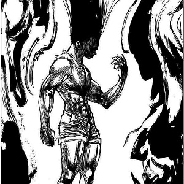

川田 岳 自己紹介コーナー ページ3
ホーム
その1
その2
その３
趣味その3
漫画を読むのが好きです。いろんなジャンルの漫画見ます。


ジャンプの王道作品。ストーリーが作りこまれてて様々な部分で感動した。
キャラが特徴的でワンパンで終わるのがわかってるのに、活躍に目が離せず続きがとても気になる。
小学校の頃によく見た作品。 友達と一緒にクラブ前にアニメを見たのはいい思い出。 はやく次の巻でないかな…
制作者：川田岳